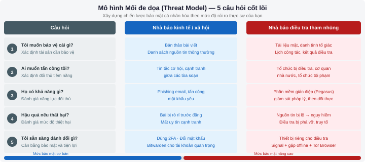
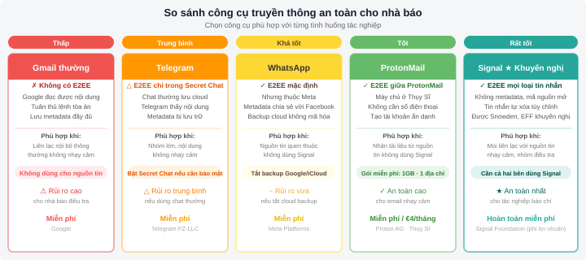
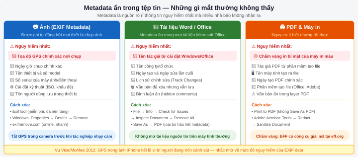

Bảo mật & Đạo đức số
Sau chương này, sinh viên có thể:
- Nhận diện các mối đe dọa bảo mật số chủ yếu mà nhà báo phải đối mặt
- Áp dụng các biện pháp bảo mật cơ bản: mật khẩu mạnh, xác thực hai yếu tố, truyền thông mã hóa
- Bảo vệ nguồn tin bằng các công cụ liên lạc an toàn
- Điều hướng bối cảnh đạo đức của báo chí trong thời đại số
9.1 Tại sao nhà báo cần bảo mật số?
Nhà báo làm việc với thông tin nhạy cảm hằng ngày: nguồn tin tố giác, tài liệu mật, dữ liệu điều tra. Trong thế giới kết nối hoàn toàn số hóa, mỗi tin nhắn, mỗi cuộc gọi, mỗi tệp tài liệu đều có thể bị theo dõi, chặn bắt hoặc rò rỉ nếu không được bảo vệ đúng cách. Bảo mật số không còn là đặc quyền của điệp viên — nó là kỹ năng nghề nghiệp thiết yếu của nhà báo hiện đại.
Các vụ tấn công nhà báo nổi tiếng
Lịch sử gần đây ghi nhận nhiều vụ tấn công kỹ thuật số nhắm vào nhà báo ở quy mô toàn cầu. Năm 2018, điện thoại của nhà báo Jamal Khashoggi bị giám sát bằng phần mềm gián điệp Pegasus trước khi ông bị sát hại tại Lãnh sự quán Saudi Arabia ở Istanbul. Pegasus — được phát triển bởi tập đoàn NSO Group của Israel — có khả năng xâm nhập iPhone và Android mà không cần nạn nhân nhấp vào bất kỳ đường dẫn nào, đọc toàn bộ tin nhắn, bật micro và camera từ xa.
Năm 2021, Dự án Pegasus do tổ chức Forbidden Stories dẫn đầu (phối hợp với Amnesty International và 17 tờ báo quốc tế, trong đó có The Guardian, Le Monde, Washington Post) đã phân tích dữ liệu từ danh sách hơn 50.000 số điện thoại bị nhắm tới. Kết quả cho thấy hàng trăm nhà báo, luật sư và lãnh đạo đối lập tại nhiều quốc gia đã bị giám sát bằng phần mềm này.
Tại khu vực Đông Nam Á, Tổ chức Phóng viên không biên giới (RSF) ghi nhận nhiều trường hợp nhà báo bị hack email, tài khoản mạng xã hội bị chiếm quyền kiểm soát và nguồn tin bị lộ danh tính do thiếu các biện pháp bảo mật cơ bản.
Bảo mật không phải chỉ bảo vệ bạn — nó bảo vệ cả nguồn tin và những người tin tưởng chia sẻ thông tin với bạn. Một nguồn tin lộ danh tính có thể mất việc làm, bị truy tố, thậm chí đối mặt với nguy hiểm tính mạng.
Mô hình mối đe dọa (Threat Modeling)
Threat modeling là quá trình xác định có hệ thống: ai muốn tấn công bạn, họ có khả năng gì, và bạn cần bảo vệ điều gì. Đây là nền tảng của mọi chiến lược bảo mật chuyên nghiệp — thay vì áp dụng tất cả biện pháp một cách tràn lan, bạn tập trung nguồn lực vào những mối đe dọa thực sự liên quan đến mình.
Để xây dựng threat model cho bản thân, hãy trả lời 5 câu hỏi sau:
| Câu hỏi | Ví dụ — Nhà báo mảng kinh tế | Ví dụ — Nhà báo điều tra tham nhũng |
|---|---|---|
| Tôi muốn bảo vệ cái gì? | Danh sách nguồn tin, bản thảo bài viết | Tài liệu mật, danh tính nguồn tin nội bộ |
| Ai muốn tấn công tôi? | Tin tặc cơ hội, cạnh tranh giữa các tòa soạn | Cơ quan nhà nước, tổ chức tội phạm, doanh nghiệp bị điều tra |
| Họ có khả năng gì? | Phishing email, tấn công mật khẩu yếu | Phần mềm gián điệp tinh vi, giám sát pháp lý |
| Hậu quả nếu thất bại? | Bài viết bị rò rỉ trước khi đăng | Nguồn tin bị lộ, điều tra bị phá vỡ |
| Tôi sẵn sàng đánh đổi bao nhiêu? | Dùng thêm 2FA, đổi mật khẩu | Dùng thiết bị riêng cho điều tra, gặp nguồn tin offline |

Electronic Frontier Foundation (EFF) cung cấp hướng dẫn Threat Modeling miễn phí tại ssd.eff.org (Surveillance Self-Defense). Đây là tài liệu tham khảo chuẩn của nhiều tòa soạn lớn trên thế giới.
Tình hình bảo mật báo chí tại Việt Nam và khu vực
Theo Chỉ số Tự do Báo chí Thế giới 2024 của RSF, Việt Nam xếp hạng 174/180 quốc gia. Trong bối cảnh này, các rủi ro kỹ thuật số mà nhà báo Việt Nam đối mặt bao gồm: tài khoản mạng xã hội bị vô hiệu hóa hoặc báo cáo hàng loạt, phishing nhắm vào email tòa soạn, và thiếu nhận thức về bảo mật trong quy trình tác nghiệp hằng ngày.
Tại khu vực Đông Nam Á, tổ chức Access Now ghi nhận xu hướng gia tăng các cuộc tấn công spear-phishing (lừa đảo có chủ đích) nhắm vào nhà báo — đây là kiểu tấn công trong đó kẻ tấn công nghiên cứu kỹ nạn nhân và soạn email giả mạo trông rất thuyết phục, thường giả danh đồng nghiệp, nguồn tin hoặc tổ chức uy tín.
9.2 Bảo mật tài khoản
Tại sao mật khẩu "Abc123" nguy hiểm?
Mật khẩu yếu là điểm xâm nhập phổ biến nhất trong các vụ tấn công mạng. Năm 2023, công ty bảo mật NordPass phân tích hơn 4,3 tỷ mật khẩu bị rò rỉ trên internet và phát hiện rằng mật khẩu phổ biến nhất toàn cầu vẫn là 123456 — có thể bị bẻ khóa trong chưa đầy 1 giây. Mật khẩu như Abc123, tên + ngày sinh, hoặc tên tòa soạn + năm thành lập đều cực kỳ dễ đoán.
Tin tặc sử dụng hai phương pháp chính để bẻ mật khẩu: brute force (thử hàng tỷ tổ hợp bằng máy tính) và dictionary attack (dùng danh sách hàng triệu mật khẩu phổ biến). Một mật khẩu 8 ký tự chỉ dùng chữ thường có thể bị bẻ trong vài phút bằng phần cứng phổ thông ngày nay.
Một mật khẩu an toàn cần: ít nhất 16 ký tự, kết hợp chữ hoa, chữ thường, số và ký tự đặc biệt, và không có ý nghĩa gì với bạn (tức là không phải tên, ngày sinh, địa chỉ). Ví dụ tốt: xK#9mPqL!2vRw$7n. Không thể nhớ? Đó chính xác là lý do bạn cần trình quản lý mật khẩu.
Trình quản lý mật khẩu
Trình quản lý mật khẩu (password manager) là ứng dụng tạo, lưu trữ và điền tự động mật khẩu mạnh và duy nhất cho từng tài khoản. Bạn chỉ cần nhớ một "mật khẩu chủ" (master password) duy nhất, còn lại ứng dụng lo.
| Trình quản lý | Chi phí | Nổi bật | Phù hợp cho |
|---|---|---|---|
| 1Password | $3/tháng (cá nhân) | Giao diện đẹp, Travel Mode ẩn vault khi qua biên giới | Nhà báo thường xuyên đi công tác quốc tế |
| Bitwarden | Miễn phí (mã nguồn mở) | Hoàn toàn mã nguồn mở, có thể tự host server | Người dùng cần giải pháp miễn phí, tin tưởng mã nguồn mở |
| KeePassXC | Miễn phí | Lưu trữ offline hoàn toàn, không cloud | Nhà báo làm việc trong môi trường kiểm duyệt cao |
Bắt đầu với Bitwarden vì miễn phí hoàn toàn, đa nền tảng (Windows, Mac, iOS, Android) và đã được kiểm toán bảo mật độc lập nhiều lần. Tải tại bitwarden.com và cài extension cho trình duyệt.
Xác thực hai yếu tố (2FA)
Xác thực hai yếu tố (Two-Factor Authentication — 2FA) là lớp bảo vệ thứ hai sau mật khẩu. Ngay cả khi kẻ tấn công biết mật khẩu của bạn, họ vẫn không thể đăng nhập nếu không có yếu tố thứ hai. Có ba loại 2FA theo thứ tự bảo mật tăng dần:
| Loại 2FA | Cách hoạt động | Mức bảo mật | Nhược điểm |
|---|---|---|---|
| SMS OTP | Mã 6 số gửi qua tin nhắn điện thoại | Thấp — Trung bình | Dễ bị tấn công SIM swap; không hoạt động khi mất sóng |
| Authenticator App | App tạo mã 6 số thay đổi mỗi 30 giây (Google Authenticator, Aegis) | Cao | Mất điện thoại cần backup codes; cần cài app |
| Hardware Key | Thiết bị vật lý (YubiKey) cắm USB hoặc chạm NFC | Rất cao | Chi phí ($25–50); có thể mất chìa khóa vật lý |
Tấn công SIM swap — trong đó kẻ tấn công thuyết phục nhà mạng chuyển số điện thoại của bạn sang SIM của chúng — ngày càng phổ biến. Nhà báo điều tra nên dùng Authenticator App hoặc Hardware Key thay vì SMS.
Thiết lập 2FA với Google Authenticator — Hướng dẫn từng bước
Thực hành này áp dụng cho Gmail, nhưng quy trình tương tự cho hầu hết dịch vụ (Facebook, Twitter, Dropbox).
- Truy cập myaccount.google.com và đăng nhập
- Chọn mục Bảo mật trong menu bên trái
- Cuộn xuống phần Xác minh 2 bước, nhấn Bắt đầu
- Tải ứng dụng Google Authenticator hoặc Aegis (Android, khuyến nghị vì mã nguồn mở) về điện thoại
- Trong cài đặt Google, chọn Ứng dụng Authenticator thay vì SMS
- Mở app Authenticator, nhấn dấu +, chọn Quét mã QR
- Quét mã QR hiển thị trên màn hình máy tính
- Nhập mã 6 số từ app để xác nhận
- Quan trọng: Tải và lưu trữ an toàn các backup codes — đây là mã khẩn cấp khi mất điện thoại
9.3 Truyền thông an toàn
Mã hóa đầu-cuối (End-to-End Encryption) là gì?
Hãy tưởng tượng bạn gửi thư trong một phong bì: nhân viên bưu điện có thể thấy phong bì nhưng không đọc được nội dung bên trong. Mã hóa đầu-cuối (end-to-end encryption — E2EE) hoạt động theo nguyên lý tương tự nhưng mạnh hơn nhiều: tin nhắn được mã hóa ngay trên thiết bị của người gửi và chỉ được giải mã trên thiết bị của người nhận. Ngay cả công ty cung cấp dịch vụ cũng không thể đọc nội dung.
Ngược lại, Gmail thông thường — dù dùng HTTPS khi truyền dữ liệu — vẫn cho phép Google đọc nội dung email của bạn trên máy chủ của họ. Đây là cơ sở để Google phục vụ quảng cáo và tuân thủ yêu cầu từ cơ quan pháp lý.
Mặc định E2EE: Signal, WhatsApp (chú ý: WhatsApp thuộc Meta, metadata vẫn bị thu thập), iMessage (giữa iPhone với nhau), ProtonMail.
Không có E2EE mặc định: Gmail, Telegram (chỉ có E2EE trong "Secret Chat"), Facebook Messenger (trừ khi bật thủ công).
Signal: Nhắn tin và gọi điện an toàn
Signal là ứng dụng nhắn tin được đánh giá cao nhất về bảo mật trong cộng đồng an ninh mạng toàn cầu. Được phát triển bởi tổ chức phi lợi nhuận Signal Foundation, ứng dụng là mã nguồn mở (bất kỳ ai cũng có thể kiểm tra code), miễn phí và không thu thập metadata người dùng. Edward Snowden, người tiết lộ chương trình giám sát hàng loạt của NSA, đã công khai khuyến nghị dùng Signal.
Thực hiện theo các bước sau để thiết lập Signal đúng cách cho tác nghiệp báo chí.
- Tải Signal từ signal.org (iOS App Store hoặc Google Play Store). Chú ý: chỉ tải từ nguồn chính thức, không từ các app store bên thứ ba
- Cài đặt và đăng ký bằng số điện thoại. Xác minh qua SMS hoặc cuộc gọi thoại
- Vào Settings → Privacy, bật Screen Lock và tắt Read receipts (báo đã đọc)
- Bật Note to Self (ghi chú cho bản thân) để thực hành gửi tin trước
- Trong từng cuộc trò chuyện, nhấn vào tên liên lạc, bật Disappearing Messages (tin nhắn tự xóa) — đặt thành 1 tuần hoặc ngắn hơn tùy mức độ nhạy cảm
- Cài Signal Desktop (signal.org/download) để tiện dùng trên máy tính, nhưng nhớ đặt mã PIN để khóa app
- Xác minh danh tính liên lạc bằng Safety Numbers: gặp trực tiếp hoặc gọi điện để đọc và xác nhận dãy số khớp nhau
Signal chỉ an toàn nếu cả hai đầu đều dùng Signal. Nếu bạn nhắn tin cho ai đó qua SMS thông thường từ Signal (tin màu xanh lá), tin nhắn đó không được mã hóa E2EE. Ngoài ra, điện thoại bị phần mềm gián điệp (như Pegasus) có thể đọc tin nhắn Signal ngay trên màn hình trước khi được mã hóa.
ProtonMail: Email mã hóa miễn phí
ProtonMail được thành lập năm 2014 bởi các nhà khoa học từ CERN tại Geneva, Thụy Sĩ — quốc gia có luật bảo vệ quyền riêng tư nghiêm ngặt. Email giữa các tài khoản ProtonMail được mã hóa E2EE tự động. Khi gửi đến email thông thường (Gmail, Yahoo), ProtonMail có thể thiết lập mật khẩu bảo vệ email.
Gói miễn phí cho phép 1 địa chỉ email với 1GB dung lượng — đủ cho việc liên lạc với nguồn tin nhạy cảm. Truy cập tại proton.me để tạo tài khoản.

Khi nào dùng gì?
| Tình huống | Công cụ phù hợp | Lý do |
|---|---|---|
| Trao đổi với biên tập viên về nội dung thông thường | Email tòa soạn thông thường | Tiện lợi, không cần bảo mật cao |
| Nhận tài liệu từ nguồn tin ẩn danh | SecureDrop hoặc ProtonMail | Ẩn danh, không lưu metadata |
| Liên lạc thường xuyên với nguồn tin nhạy cảm | Signal | E2EE, tin nhắn tự xóa, gọi điện an toàn |
| Liên lạc với nguồn tin không dùng smartphone | ProtonMail (với mật khẩu email) | Không yêu cầu nguồn tin cài app |
| Nhắn tin nhóm với cả team điều tra | Signal (Group) | E2EE cho cả nhóm, không cần tài khoản |
9.4 Bảo vệ nguồn tin
Đạo đức và luật pháp bảo vệ nguồn tin
Bảo vệ nguồn tin là một trong những nguyên tắc đạo đức cốt lõi của nghề báo toàn cầu. Khi một nguồn tin chia sẻ thông tin với nhà báo trong điều kiện ẩn danh, đó là giao kèo danh dự: nhà báo cam kết không tiết lộ danh tính nguồn tin dù chịu áp lực pháp lý, chính trị hay cá nhân.
Tại Việt Nam, Luật Báo chí 2016 (Điều 25) quy định nhà báo có quyền "từ chối tiết lộ nguồn tin, trừ trường hợp có yêu cầu của Viện trưởng Viện kiểm sát nhân dân, Chánh án Tòa án nhân dân cấp tỉnh và tương đương trở lên cần thiết cho việc điều tra, xét xử tội phạm nghiêm trọng." Điều này có nghĩa là trong nhiều hoàn cảnh, bảo vệ nguồn tin bằng kỹ thuật số là cách duy nhất để giữ được cam kết này — vì nhà báo không thể tiết lộ điều mình không biết.
Đừng lưu trữ thông tin định danh nguồn tin nếu không cần thiết. Đừng ghi tên thật nguồn tin trong ghi chú điện thoại, email hay tài liệu Google Docs. Càng ít thông tin bạn có, càng ít nguy cơ bị buộc tiết lộ.
SecureDrop: Kênh nhận tin tố giác an toàn
SecureDrop là hệ thống mã nguồn mở cho phép nguồn tin gửi tài liệu cho nhà báo một cách hoàn toàn ẩn danh, được phát triển bởi Freedom of the Press Foundation. Hệ thống chạy trên mạng Tor, không ghi lại địa chỉ IP, và mã hóa tất cả tài liệu nhận được.
Nhiều tòa soạn lớn đã triển khai SecureDrop: The Guardian, New York Times, Washington Post, Der Spiegel. Tại Việt Nam, đây vẫn là giải pháp chưa phổ biến nhưng giá trị cao cho các đơn vị báo chí điều tra.
Metadata nguy hiểm: Tài liệu tiết lộ gì?
Metadata là "dữ liệu về dữ liệu" — thông tin ẩn được nhúng vào tệp tin mà mắt thường không thấy. Đây là một trong những nguồn rò rỉ thông tin nguy hiểm nhất vì nhiều nhà báo không nhận ra nó tồn tại.
Một bức ảnh chụp bằng điện thoại thông thường có thể chứa: tọa độ GPS chính xác nơi chụp, tên thiết bị và số series, ngày giờ chụp, và thậm chí tên người dùng được lưu trong thiết bị. Năm 2012, kỹ thuật viên tại Vice Media vô tình tiết lộ vị trí của John McAfee — người đang trốn cảnh sát Guatemala — thông qua metadata ảnh iPhone đăng kèm bài phỏng vấn.
Tài liệu Word và PDF cũng chứa metadata: tên tác giả (từ cài đặt Windows/Office), lịch sử chỉnh sửa, tên công ty và thậm chí đoạn văn bản đã bị xóa nhưng vẫn lưu trong file. Đây là cách nhiều vụ rò rỉ tài liệu được truy ra nguồn gốc.

Ảnh (EXIF data): GPS, thiết bị, ngày giờ, cài đặt máy ảnh.
Tài liệu Word/PDF: Tên tác giả, công ty, ngày tạo/sửa, lịch sử phiên bản, văn bản ẩn/bình luận.
Tài liệu PDF in từ máy in công ty: Một số máy in màu in các chấm vàng nhỏ không nhìn thấy bằng mắt thường chứa mã serial máy in và thời gian in.
Cách xóa metadata trước khi đăng
- Ảnh: Dùng ứng dụng ExifTool (miễn phí, đa nền tảng) hoặc trang web exifremove.com để xóa toàn bộ EXIF data trước khi đăng ảnh lên web
- Ảnh (nhanh hơn): Trên Windows, chuột phải vào file ảnh → Properties → Details → "Remove Properties and Personal Information"
- Tài liệu Word: File → Info → Check for Issues → Inspect Document → Remove All để xóa metadata ẩn
- Tài liệu PDF nhạy cảm: In sang PDF mới bằng cách dùng "Print to PDF" thay vì save trực tiếp — quá trình này loại bỏ phần lớn metadata
- Tài liệu nguồn tin gửi: Không mở trực tiếp trên máy tính thường. Dùng máy tính air-gapped (không kết nối internet) hoặc mở trong sandbox ảo để tránh malware nhúng trong tài liệu
9.5 Duyệt web an toàn
VPN: Lợi ích và giới hạn
VPN (Virtual Private Network) là dịch vụ tạo "đường hầm" mã hóa giữa thiết bị của bạn và máy chủ VPN, ẩn hoạt động duyệt web khỏi nhà mạng và các bên theo dõi mạng cục bộ. VPN hữu ích để: truy cập nội dung bị chặn theo địa lý, bảo vệ khi dùng WiFi công cộng (quán cà phê, sân bay), và ẩn địa chỉ IP khỏi các trang web bạn truy cập.
Tuy nhiên, VPN không phải "thuốc tiên": nhà cung cấp VPN có thể thấy toàn bộ lưu lượng mạng của bạn. Nếu dùng VPN miễn phí từ nguồn không rõ ràng, bạn có thể đang giao dữ liệu cho một bên còn kém tin cậy hơn nhà mạng. Hãy chọn VPN từ nhà cung cấp uy tín có chính sách không ghi log (no-log policy) được kiểm toán độc lập: Mullvad, ProtonVPN (có gói miễn phí), hoặc ExpressVPN.
Nhiều VPN miễn phí — đặc biệt phổ biến trên các app store — kiếm tiền bằng cách bán dữ liệu duyệt web của người dùng cho bên thứ ba. Một nghiên cứu năm 2023 phát hiện hơn 38% VPN miễn phí trên Google Play có hành vi thu thập dữ liệu đáng ngờ. Nếu cần VPN miễn phí đáng tin, chọn ProtonVPN Free.
Tor Browser: Khi nào cần dùng?
Tor Browser định tuyến lưu lượng mạng của bạn qua ít nhất ba máy chủ được mã hóa (gọi là "nodes") do tình nguyện viên vận hành trên toàn thế giới, khiến việc truy vết địa chỉ IP thực của bạn cực kỳ khó. Đây là công cụ mạnh nhất để duyệt web ẩn danh — nhưng cũng chậm nhất.
Sử dụng Tor Browser khi bạn cần: truy cập SecureDrop để nhận tài liệu ẩn danh, nghiên cứu về đối tượng điều tra mà không để lộ danh tính, hoặc truy cập thông tin trong môi trường kiểm duyệt cao. Tải Tor Browser tại torproject.org — đây là trang chính thức duy nhất.
HTTPS và chứng chỉ SSL
HTTPS (HTTP Secure) là giao thức mã hóa kết nối giữa trình duyệt và máy chủ web. Khi truy cập trang có HTTPS (biểu tượng ổ khóa trên thanh địa chỉ), dữ liệu truyền đi được mã hóa — nhà mạng có thể biết bạn truy cập trang gì nhưng không đọc được nội dung cụ thể.
Đối với nhà báo, trang web của tòa soạn bắt buộc phải dùng HTTPS. Cài đặt Let's Encrypt — chứng chỉ SSL miễn phí — trên WordPress hoặc bất kỳ hosting nào chỉ mất vài phút và bảo vệ độc giả của bạn.
uBlock Origin: Chặn quảng cáo và tracker theo dõi — miễn phí, mã nguồn mở.
Privacy Badger (EFF): Tự động học và chặn các tracker vô hình.
Cả hai đều có trên Chrome, Firefox và Edge.
9.6 Đạo đức số trong báo chí
Quyền riêng tư trong thời đại số
Internet không có chức năng "xóa" thực sự — bất kỳ nội dung nào đã được đăng có thể bị lưu bởi cache của Google, Wayback Machine, hay bất kỳ ai chụp màn hình. Đây là thực tế nhà báo phải đối mặt khi đưa tin về cá nhân, đặc biệt là người bình thường xuất hiện trong tin tức vì một hoàn cảnh không mong muốn.
Quyền được lãng quên (Right to be Forgotten) — được EU công nhận trong GDPR 2018 — cho phép cá nhân yêu cầu xóa thông tin cá nhân khỏi kết quả tìm kiếm trong những trường hợp nhất định. Nhà báo cần cân bằng giữa quyền công chúng được thông tin và quyền riêng tư của cá nhân.
SPJ (Society of Professional Journalists) Code of Ethics khuyến cáo nhà báo phải "minimize harm" — giảm thiểu tổn hại: hỏi liệu có thực sự cần thiết đăng ảnh mặt nạn nhân, tên đầy đủ của người vị thành niên, hay địa chỉ nhà của nhân vật tin tức không.
Kiểm chứng thông tin (Fact-checking)
Trong môi trường tin tức chạy theo tốc độ của mạng xã hội, áp lực đăng trước đăng nhanh thường lấn át yêu cầu kiểm chứng. Nhưng đăng thông tin sai — dù vô tình — gây hại cho uy tín nhà báo và có thể gây tổn hại thực sự cho người liên quan.
Các công cụ kiểm chứng cơ bản mà nhà báo cần biết:
| Công cụ | Dùng để | URL |
|---|---|---|
| Google Reverse Image Search | Kiểm tra ảnh có bị dùng sai bối cảnh không | images.google.com |
| TinEye | Tìm nguồn gốc và lịch sử xuất hiện của ảnh | tineye.com |
| InVID / WeVerify | Kiểm tra video: trích xuất frame, reverse search | weverify.eu |
| Snopes | Kiểm tra tin đồn, urban legend toàn cầu | snopes.com |
| AFP Fact Check | Kiểm chứng tin tức khu vực châu Á — Thái Bình Dương | factcheck.afp.com |
| Mafindo | Kiểm chứng tiếng Việt và Đông Nam Á | turnbackhoax.id |
Bản quyền nội dung trên mạng
Một sai lầm phổ biến: nhiều nhà báo mặc nhiên cho rằng ảnh trên Google Images, hay bài viết trên mạng xã hội, có thể tự do sử dụng. Điều này hoàn toàn sai. Mọi nội dung sáng tạo đều được bảo hộ bản quyền ngay từ khi tạo ra, dù không có dấu © hay đăng ký chính thức.
Để sử dụng ảnh an toàn, hãy tìm trong các nguồn có giấy phép mở (Creative Commons): Unsplash, Pexels, Flickr CC, Wikimedia Commons. Luôn ghi nguồn theo yêu cầu của từng giấy phép CC, và chú ý phân biệt CC-BY (cho phép dùng thương mại với điều kiện ghi nguồn) với CC-BY-NC (phi thương mại).
Embedding (nhúng) một bài đăng Twitter/Facebook thường được chấp nhận pháp lý. Nhưng tải ảnh từ mạng xã hội về rồi đăng lại trên trang của bạn mà không xin phép là vi phạm bản quyền — dù đó là ảnh của người bình thường. Luôn xin phép trực tiếp, hoặc dùng chức năng embed của nền tảng.
9.7 AI, Deepfake và thách thức đạo đức mới
Sự bùng nổ của AI sinh tạo (generative AI) từ năm 2022 đã tạo ra một lớp thách thức hoàn toàn mới cho báo chí: khi ảnh, video và giọng nói có thể được làm giả với chất lượng ngày càng khó phân biệt, nhà báo vừa phải bảo vệ mình trước các cuộc tấn công mới, vừa phải có trách nhiệm không phát tán nội dung giả mạo.
Deepfake: Mối đe dọa với báo chí
Deepfake là nội dung tổng hợp bằng AI — video, ảnh hoặc âm thanh tạo ra hình ảnh và giọng nói giả của người thật. Các mối đe dọa deepfake cụ thể với nhà báo:
- Bằng chứng giả trong điều tra: Kẻ xấu có thể tạo video giả lấy danh nghĩa nhân vật điều tra để đánh lạc hướng hoặc bôi nhọ.
- Lừa nhà báo qua phỏng vấn giả: Nguồn tin hoặc phát ngôn viên deepfake liên lạc với nhà báo để cung cấp thông tin sai lệch.
- Tấn công danh tiếng nhà báo: Tạo video giả của nhà báo nói hoặc làm điều không bao giờ xảy ra để phá uy tín.
- Tin giả siêu thực: Video deepfake của lãnh đạo tuyên bố chiến tranh, thảm họa hay chính sách giả — có thể gây hoảng loạn thực sự trước khi bị cải chính.
Cách phát hiện deepfake — Kỹ thuật cơ bản
| Dấu hiệu | Quan sát gì | Công cụ hỗ trợ |
|---|---|---|
| Chớp mắt bất thường | Deepfake thế hệ đầu ít hoặc không chớp mắt tự nhiên | Xem chậm lại 0.25x |
| Đường viền khuôn mặt | Tóc, tai, cổ áo không khớp với chuyển động | Phóng to phần đường viền |
| Ánh sáng không nhất quán | Bóng trên mặt không khớp với nguồn sáng môi trường | So sánh với ảnh/video thật đã xác minh |
| Âm thanh không khớp miệng | Môi không khớp hoàn toàn với âm thanh | Xem frame-by-frame |
| AI Detection Tools | — | Hive Moderation, Sensity AI, FakeCatcher (Intel) |
Không có công cụ nào phát hiện deepfake với độ chính xác 100%. Công cụ AI mới nhất của 2024 có thể qua mặt nhiều detector. Nguyên tắc vàng: nếu không thể xác minh nguồn gốc video bằng báo chí truyền thống (ai quay, khi nào, ở đâu), hãy coi nó là nghi vấn dù không phát hiện dấu hiệu deepfake.
AI trong tấn công phishing thế hệ mới
AI đang nâng cấp đáng kể các cuộc tấn công kỹ thuật xã hội (social engineering) nhắm vào nhà báo:
- Spear-phishing cá nhân hóa: AI phân tích social media, bài viết, và hoạt động công khai của nhà báo để soạn email lừa đảo cực kỳ thuyết phục — đúng tên, đúng dự án đang làm, đúng ngôn ngữ của người quen.
- Voice cloning: Chỉ cần 3–5 giây âm thanh, AI có thể tạo giọng nói giả của biên tập viên hay nguồn tin gọi điện "yêu cầu" thông tin nhạy cảm.
- Email từ đồng nghiệp giả: AI tạo email giống hệt phong cách viết của đồng nghiệp (học từ email cũ) để yêu cầu chuyển tài liệu hoặc đăng nhập vào đường dẫn độc hại.
Khi nhận yêu cầu nhạy cảm qua email hoặc tin nhắn — dù từ người quen — hãy xác minh qua kênh khác. Ví dụ: nhận email từ "biên tập viên" yêu cầu gửi tài liệu → gọi điện trực tiếp hoặc nhắn Signal để xác nhận. Không bao giờ dùng thông tin liên lạc có trong email đó để xác minh.
Trách nhiệm đạo đức khi dùng AI trong sản xuất nội dung
Ngoài việc tự bảo vệ, nhà báo còn có trách nhiệm đạo đức trong việc sử dụng AI. Hội Nhà báo Chuyên nghiệp Hoa Kỳ (SPJ) và nhiều tổ chức báo chí quốc tế đang hội tụ xung quanh một số nguyên tắc chung:
- Minh bạch về AI: Nếu AI đóng vai trò đáng kể trong sản xuất một bài báo (viết, phân tích dữ liệu, tạo hình ảnh), phải ghi chú cho độc giả biết.
- Con người chịu trách nhiệm cuối cùng: AI không thể là "tác giả" theo nghĩa pháp lý và đạo đức. Nhà báo ký tên chịu trách nhiệm về mọi nội dung, kể cả phần AI hỗ trợ tạo ra.
- Kiểm chứng không thể giao cho AI: AI có thể bịa đặt thông tin (hallucination). Mọi sự kiện, số liệu, trích dẫn trong bài cần được nhà báo kiểm chứng độc lập từ nguồn gốc.
- Không dùng AI để tạo nguồn tin giả: Tạo "chuyên gia ảo" hay trích dẫn không có thật bằng AI là hành vi giả mạo báo chí nghiêm trọng.
Câu hỏi ôn tập
- Xây dựng threat model cho bản thân với vai trò là nhà báo mảng bạn muốn theo đuổi (kinh tế, xã hội, chính trị, v.v.). Xác định: ai có thể muốn tấn công bạn, họ có năng lực gì, và bạn cần bảo vệ thông tin gì nhất?
- So sánh Signal và Telegram về mức độ bảo mật. Nhiều người cho rằng Telegram an toàn hơn Signal vì có nhiều tính năng hơn — bạn đồng ý hay không đồng ý? Giải thích dựa trên kiến thức về mã hóa E2EE.
- Một nguồn tin gửi cho bạn tài liệu PDF mật qua email Gmail thông thường và yêu cầu bảo vệ danh tính. Những rủi ro cụ thể nào tồn tại trong kịch bản này? Bạn sẽ xử lý tình huống này như thế nào để bảo vệ nguồn tin?
- Thực hành: Cài đặt Bitwarden, tạo mật khẩu mạnh cho 3 tài khoản quan trọng nhất của bạn (email, mạng xã hội, tài khoản tòa soạn), và bật 2FA cho ít nhất một tài khoản. Viết báo cáo ngắn về quy trình và những khó khăn gặp phải.
- Bạn nhận được một video clip 30 giây cho thấy một quan chức địa phương đang nhận hối lộ. Clip được gửi ẩn danh qua Telegram. Mô tả quy trình xác minh đầy đủ trước khi có thể sử dụng clip này — bao gồm cả việc kiểm tra xem đây có phải deepfake không.
- Tòa soạn bạn đang cân nhắc dùng AI để tự động tóm tắt các bản tin dài thành bản tin ngắn 100 chữ cho bản tin sáng. Nêu 3 lợi ích và 3 rủi ro đạo đức/chất lượng của quy trình này. Đề xuất biện pháp kiểm soát chất lượng cụ thể nếu tòa soạn quyết định triển khai.